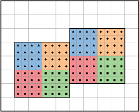
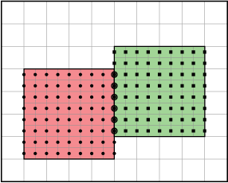
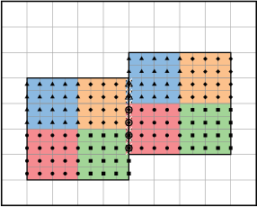
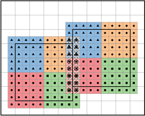
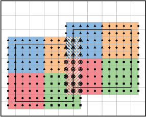

HeatEquation_EX1_C Example¶
The source code tree for the heat equation example is simple, as shown in Fig. 1. We recommend you study main.cpp and advance.cpp to see some of the classes described below in action.
{kind=link}
Fig. 1 Source code tree for the HeatEquation_EX1_C example
- amrex/Src/Base/
- Contains source code for single-level simulations.
- amrex/Tutorials/HeatEquation_EX1_C
- Build the code here by editing the GNUmakefile and running make.
Dimensionality¶
As we have mentioned in Building AMReX, the
dimensionality of AMReX must be set at compile time. A macro,
AMREX_SPACEDIM, is defined to be the number of spatial
dimensions. C++ codes can also use the amrex::SpaceDim
variable. Fortran codes can use either the macro and preprocessing or
do
use amrex_fort_module, only : amrex_spacedim
The coordinate directions are zero based.
Vector¶
Vector class in AMReX_Vector.H is derived from
std::vector. The only difference between Vector and
std::vector is that Vector::operator[] provides bound checking
when compiled with DEBUG=TRUE.
Real¶
AMReX can be compiled to use either double precision (which is the
default) or single precision. amrex::Real is typedef’d to
either double or float. C codes can use
amrex_real. They are defined in AMReX_REAL.H. The data
type is accessible in Fortran codes via
use amrex_fort_module, only : amrex_real
ParallelDescriptor¶
AMReX users do not need to use MPI directly. Parallel communication
is often handled by the data abstraction classes (e.g.,MultiFab; section
on FabArray, MultiFab and iMultiFab). In addition, AMReX has provided namespace
ParallelDescriptor in AMReX_ParallelDescriptor.H. The frequently used
functions are
int myproc = ParallelDescriptor::MyProc(); // Return the rank
int nprocs = ParallelDescriptor::NProcs(); // Return the number of processes
if (ParallelDescriptor::IOProcessor()) {
// Only the I/O process executes this
}
int ioproc = ParallelDescriptor::IOProcessorNumber(); // I/O rank
ParallelDescriptor::Barrier();
// Broadcast 100 ints from the I/O Processor
Vector<int> a(100);
ParallelDescriptor::Bcast(a.data(), a.size(),
ParallelDescriptor::IOProcessorNumber())
// See AMReX_ParallelDescriptor.H for many other Reduce functions
ParallelDescriptor::ReduceRealSum(x);
Print¶
AMReX provides classes in AMReX_Print.H for printing messages
to standard output or any C++ ostream. The main reason one
should use them instead of std::cout is that messages from
multiple processes or threads do not get mixed up. Below are some
examples.
Print() << "x = " << x << "\n"; // Print on I/O processor
Real pi = std::atan(1.0)*4.0;
// Print on rank 3 with precision of 17 digits
// SetPrecision does not modify cout's floating-point decimal precision setting.
Print(3).SetPrecision(17) << pi << "\n";
int oldprec = std::cout.precision(10);
Print() << pi << "\n"; // Print with 10 digits
AllPrint() << "Every process prints\n"; // Print on every process
std::ofstream ofs("my.txt", std::ofstream::out);
Print(ofs) << "Print to a file" << std::endl;
ofs.close();
ParmParse¶
ParmParse in AMReX_ParmParse.H is a class providing a
database for the storage and retrieval of command-line and input-file
arguments. When amrex::Initialize() is called, the first
command-line argument after the executable name (if there is one and
it does not contain character =) is taken to be the inputs file,
and the contents in the file are used to initialize the
ParmParse database. The rest of the command-line arguments are
also parsed by ParmParse. The format of the inputs file is a
series of definitions in the form of prefix.name = value value
.... For each line, text after # are comments. Here is an
example inputs file.
nsteps = 100 # integer nsteps = 1000 # nsteps appears a second time dt = 0.03 # floating point number ncells = 128 64 32 # a list of 3 ints xrange = -0.5 0.5 # a list of 2 reals title = "Three Kingdoms" # a string hydro.cfl = 0.8 # with prefix, hydro
The following code shows how to use ParmParse to get/query the values.
ParmParse pp;
int nsteps = 0;
pp.query("nsteps", nsteps);
amrex::Print() << nsteps << "\n"; // 1000
Real dt;
pp.get("dt", dt); // runtime error if dt is not in inputs
Vector<int> numcells;
// The variable name 'numcells' can be different from parameter name 'ncells'.
pp.getarr("ncells", numcells);
amrex::Print() << numcells.size() << "\n"; // 3
Vector<Real> xr {-1.0, 1.0};
if (!queryarr("xrange", xr)) {
amrex::Print() << "Cannot find xrange in inputs, "
<< "so the default {-1.0,1.0} will be used\n";
}
std::string title;
pp.query("title", title); // query string
ParmParse pph("hydro"); // with prefix 'hydro'
Real cfl;
pph.get("cfl", cfl); // get parameter with prefix
Note that when there are multiple definitions for a parameter
ParmParse by default returns the last one. The difference between
query and get should also be noted. It is a runtime error
if get fails to get the value, whereas query returns an
error code without generating a runtime error that will abort the run.
If it is sometimes convenient to override parameters with command-line
arguments without modifying the inputs file. The command-line
arguments after the inputs file are added later than the file to the
database and are therefore used by default. For example, one can run
with
myexecutable myinputsfile ncells="64 32 16" hydro.cfl=0.9
to change the value of ncells and hydro.cfl.
Example of AMR Grids¶
In block-structured AMR, there is a hierarchy of logically rectangular grids. The computational domain on each AMR level is decomposed into a union of rectangular domains. Fig. 2 below shows an example of AMR with three total levels. In the AMReX numbering convention, the coarsest level is level 0. The coarsest grid (black) covers the domain with \(16^2\) cells. Bold lines represent grid boundaries. There are two intermediate resolution grids (blue) at level 1 and the cells are a factor of two finer than those at level 0. The two finest grids (red) are at level 2 and the cells are a factor of two finer than the level 1 cells. There are 1, 2 and 2 Boxes on levels 0, 1, and 2, respectively. Note that there is no direct parent-child connection. In this chapter, we will focus on single levels.
{kind=link}
Fig. 2 Example of AMR grids. There are three levels in total. There are 1, 2 and 2 Boxes on levels 0, 1, and 2, respectively.
Box, IntVect and IndexType¶
Box in AMReX_Box.H is the data structure for representing
a rectangular domain in indexing space.
In Fig. 2,
there are 1, 2 and 2 Boxes on levels 0, 1 and 2, respectively.
Box is a dimension-dependent class. It has lower and upper corners
(represented by IntVect) and an index type (represented by
IndexType). A :cpp`Box` contains no floating-point data.
IntVect¶
IntVec is a dimension-dependent class representing an
integer vector in AMREX SPACEDIM-dimensional space. An
IntVect can be constructed as follows,
IntVect iv(AMREX_D_DECL(19, 0, 5));
Here AMREX_D_DECL is a macro that expands
AMREX_D_DECL(19,0,5) to either 19 or 19, 0 or
19, 0, 5 depending on the number of dimensions. The data can be
accessed via operator[], and the internal data pointer can be
returned by function getVect. For example
for (int idim = 0; idim < AMREX_SPACEDIM; ++idim) {
amrex::Print() << "iv[" << idim << "] = " << iv[idim] << "\n";
}
const int * p = iv.getVect(); // This can be passed to Fortran/C as an array
The class has a static function TheZeroVector() returning the
zero vector, TheUnitVector() returning the unit vector, and
TheDimensionVector (int dir) returning a reference to a constant
IntVect that is zero except in the dir-direction. Note
the direction is zero-based. IntVect has a number of relational
operators, ==, !=, <, <=, > , and
>= that can be used for lexicographical comparison (e.g., key of
std::map), and a class IntVect::shift_hasher that can be
used as a hash function (e.g., for std::unordered_map). It
also has various arithmetic operators. For example,
IntVect iv(AMREX_D_DECL(19, 0, 5));
IntVect iv2((AMREX_D_DECL(4, 8, 0));
iv += iv2; // iv is now (23,8,5)
iv *= 2; // iv is now (46,16,10);
In AMR codes, one often needs to do refinement and coarsening on
IntVect. The refinement operation can be done with the
multiplication operation. However, the coarsening requires care
because of the rounding towards zero behavior of integer division in
Fortran, C and C++. For example int i = -1/2 gives i = 0,
and what we want is usually i = -1. Thus, one should use
the coarsen functions:
IntVect iv(AMREX_D_DECL(127,127,127));
IntVect coarsening_ratio(AMREX_D_DECL(2,2,2));
iv.coarsen(2); // Coarsen each component by 2
iv.coarsen(coarsening_ratio); // Component-wise coarsening
const auto& iv2 = amrex::coarsen(iv, 2); // Return an IntVect w/o modifying iv
IntVect iv3 = amrex::coarsen(iv, coarsening_return); // iv not modified
Finally, we note that operator<< is overloaded for
IntVect and therefore one can call
amrex::Print() << iv << "\n";
std::cout << iv << "\n";
IndexType¶
This class defines an index as being cell based or node based in
each dimension. The default constructor defines a cell based type in
all directions. One can also construct an IndexType with an
IntVect with zero and one representing cell and node,
respectively.
// Node in x-direction and cell based in y and z-directions
// (i.e., x-face of numerical cells)
IndexType xface(IntVect{AMREX_D_DECL(1,0,0)});
The class provides various functions including
// True if the IndexType is cell based in all directions.
bool cellCentered () const;
// True if the IndexType is cell based in dir-direction.
bool cellCentered (int dir) const;
// True if the IndexType is node based in all directions.
bool nodeCentered () const;
// True if the IndexType is node based in dir-direction.
bool nodeCentered (int dir) const;
Index type is a very important concept in AMReX. It is a way of representing the notion of indices \(i\) and \(i+1/2\).
Box¶
A Box is an abstraction for defining discrete regions of
AMREX_SPACEDIM-dimensional indexing space. Boxes have an
IndexType and two IntVects representing the lower and
upper corners. Boxes can exist in positive and negative indexing
space. Typical ways of defining a Box are
IntVect lo(AMREX_D_DECL(64,64,64));
IntVect hi(AMREX_D_DECL(127,127,127));
IndexType typ({AMREX_D_DECL(1,1,1)});
Box cc(lo,hi); // By default, Box is cell based.
Box nd(lo,hi+1,typ); // Construct a nodal Box.
Print() << "A cell-centered Box " << cc << "\n";
Print() << "An all nodal Box " << nd << "\n";
Depending the dimensionality, the output of the code above is
A cell-centered Box ((64,64,64) (127,127,127) (0,0,0))
An all nodal Box ((64,64,64) (128,128,128) (1,1,1))
For simplicity, we will assume it is 3D for the rest of this section.
In the output, three integer tuples for each box are the lower corner
indices, upper corner indices, and the index types. Note that 0
and 1 denote cell and node, respectively. For each tuple like
(64,64,64), the 3 numbers are for 3 directions. The two
Boxes in the code above represent different indexing views of the
same domain of \(64^3\) cells. Note that in AMReX convention, the
lower side of a cell has the same integer value as the cell centered
index. That is if we consider a cell based index represent \(i\), the
nodal index with the same integer value represents \(i-1/2\).
Fig. 3 shows some of the different index types for 2D.
{kind=link}
Fig. 3 Some of the different index types in two dimensions: (a) cell-centered, (b) \(x\)-face-centered (i.e., nodal in \(x\)-direction only), and (c) corner/nodal, i.e., nodal in all dimensions.
There are a number of ways of converting a Box from one type to
another.
Box b0 ({64,64,64}, {127,127,127}); // Index type: (cell, cell, cell)
Box b1 = surroundingNodes(b0); // A new Box with type (node, node, node)
Print() << b1; // ((64,64,64) (128,128,128) (1,1,1))
Print() << b0; // Still ((64,64,64) (127,127,127) (0,0,0))
Box b2 = enclosedCells(b1); // A new Box with type (cell, cell, cell)
if (b2 == b0) { // Yes, they are identical.
Print() << "b0 and b2 are identical!\n";
}
Box b3 = convert(b0, {0,1,0}); // A new Box with type (cell, node, cell)
Print() << b3; // ((64,64,64) (127,128,127) (0,1,0))
b3.convert({0,0,1}); // Convert b0 to type (cell, cell, node)
Print() << b3; // ((64,64,64) (127,127,128) (0,0,1))
b3.surroundingNodes(); // Exercise for you
b3.enclosedCells(); // Exercise for you
The internal data of Box can be accessed via various member functions.
Examples are
const IntVect& smallEnd () const&; // Get the small end of the Box
int bigEnd (int dir) const; // Get the big end in dir direction
const int* loVect () const&; // Get a const pointer to the lower end
const int* hiVect () const&; // Get a const pointer to the upper end
Boxes can be refined and coarsened. Refinement or coarsening does not change the index type. Some examples are shown below.
Box ccbx ({16,16,16}, {31,31,31});
ccbx.refine(2);
Print() << ccbx; // ((32,32,32) (63,63,63) (0,0,0))
Print() << ccbx.coarsen(2); // ((16,16,16) (31,31,31) (0,0,0))
Box ndbx ({16,16,16}, {32,32,32}, {1,1,1});
ndbx.refine(2);
Print() << ndbx; // ((32,32,32) (64,64,64) (1,1,1))
Print() << ndbx.coarsen(2); // ((16,16,16) (32,32,32) (1,1,1))
Box facebx ({16,16,16}, {32,31,31}, {1,0,0});
facebx.refine(2);
Print() << facebx; // ((32,32,32) (64,63,63) (1,0,0))
Print() << facebx.coarsen(2); // ((16,16,16) (32,31,31) (1,0,0))
Box uncoarsenable ({16,16,16}, {30,30,30});
print() << uncoarsenable.coarsen(2); // ({8,8,8}, {15,15,15});
print() << uncoarsenable.refine(2); // ({16,16,16}, {31,31,31});
// Different from the original!
Note that the behavior of refinement and coarsening depends on the index
type. Note that in this context, the refined or coarsened Box still
covers the same physical domain. Box uncoarsenable in the example above
is considered uncoarsenable because its coarsened version does not cover the same
physical domain in the AMR context.
Boxes can grow in one or all directions. There are a number of grow functions.
Some are member functions of the Box class and others are non-member
functions in the amrex namespace.
The Box class provides the following member functions testing if a
Box or IntVect is contained within this Box. Note that
it is a runtime error if the two Boxes have different types.
bool contains (const Box& b) const;
bool strictly_contains (const Box& b) const;
bool contains (const IntVect& p) const;
bool strictly_contains (const IntVect& p) const;
Another very common operation is the intersection of two Boxes like in the following examples.
Box b0 ({16,16,16}, {31,31,31});
Box b1 ({ 0, 0,30}, {23,23,63});
if (b0.intersects(b1)) { // true
Print() << "b0 and b1 intersect.\n";
}
Box b2 = b0 & b1; // b0 and b1 unchanged
Print() << b2; // ((16,16,30) (23,23,31) (0,0,0))
Box b3 = surroundingNodes(b0) & surroundingNodes(b1); // b0 and b1 unchanged
Print() << b3; // ((16,16,30) (24,24,32) (1,1,1))
b0 &= b2; // b2 unchanged
Print() << b0; // ((16,16,30) (23,23,31) (0,0,0))
b0 &= b3; // Runtime error because of type mismatch!
RealBox and Geometry¶
A RealBox stores the physical location in floating-point numbers
of the lower and upper corners of a rectangular domain.
The Geometry class in AMReX_Geometry.H describes problem
domain and coordinate system for rectangular problem domains. A
Geometry object can be constructed with
explicit Geometry ( const Box& dom,
const RealBox* rb = nullptr,
int coord = -1,
int* is_per = nullptr);
Here the constructor takes a cell-centered Box specifying the
indexing space domain, an optional argument of RealBox pointer
specifying the physical domain, an optional int specifying
coordinate system type, and an optional int * specifying
periodicity. If a RealBox is not given, AMReX will construct
one based on ParmParse parameters, geometry.prob_lo and
geometry.prob_hi, where each of the parameter is an array of
AMREX_SPACEDIM real numbers. It’s a runtime error if this
fails. The optional argument for coordinate system is an integer type
with valid values being 0 (Cartesian), or 1 (cylindrical), or 2
(spherical). If it is invalid as in the case of the default argument
value, AMReX will query the ParmParse database for
geometry.coord_sys and use it if one is found. If it cannot find
the parameter, the coordinate system is set to 0 (i.e., Cartesian
coordinates). The Geometry class has the concept of periodicity.
An optional argument can be passed specifying periodicity in each
dimension. If it is not given, the domain is assumed to be
non-periodic unless there is the ParmParse integer array
parameter geometry.is_periodic with 0 denoting
non-periodic and 1 denoting periodic. Below is an example of
defining a Geometry for a periodic rectangular domain of
\([-1.0,1.0]\) in each direction discretized with \(64\) numerical cells
in each direction.
int n_cell = 64;
// This defines a Box with n_cell cells in each direction.
Box domain(IntVect{AMREX_D_DECL( 0, 0, 0)},
IntVect{AMREX_D_DECL(n_cell-1, n_cell-1, n_cell-1)});
// This defines the physical box, [-1,1] in each direction.
RealBox real_box({AMREX_D_DECL(-1.0,-1.0,-1.0)},
{AMREX_D_DECL( 1.0, 1.0, 1.0)});
// This says we are using Cartesian coordinates
int coord = 0;
// This sets the boundary conditions to be doubly or triply periodic
std::array<int,AMREX_SPACEDIM> is_periodic {AMREX_D_DECL(1,1,1)};
// This defines a Geometry object
Geometry geom(domain, &real_box, coord, is_periodic.data());
A Geometry object can return various information of the physical
domain and the indexing space domain. For example,
const Real* problo = geom.ProbLo(); // Lower corner of the physical domain
Real yhi = geom.ProbHi(1); // y-direction upper corner
const Real* dx = geom.CellSize(); // Cell size for each direction
const Box& domain = geom.Domain(); // Index domain
bool is_per = Geometry::isPeriodic(0); // Is periodic in x-direction?
if (Geometry::isAllPeriodic()) {} // Periodic in all direction?
if (Geometry::isAnyPeriodic()) {} // Periodic in any direction?
BoxArray¶
BoxArray is a class in AMReX_BoxArray.H for storing a
collection of Boxes on a single AMR level. One can make a
BoxArray out of a single Box and then chop it into multiple
Boxes.
Box domain(IntVect{0,0,0}, IntVect{127,127,127});
BoxArray ba(domain); // Make a new BoxArray out of a single Box
Print() << "BoxArray size is " << ba.size() << "\n"; // 1
ba.maxSize(64); // Chop into boxes of 64^3 cells
Print() << ba;
The output is like below,
(BoxArray maxbox(8)
m_ref->m_hash_sig(0)
((0,0,0) (63,63,63) (0,0,0)) ((64,0,0) (127,63,63) (0,0,0))
((0,64,0) (63,127,63) (0,0,0)) ((64,64,0) (127,127,63) (0,0,0))
((0,0,64) (63,63,127) (0,0,0)) ((64,0,64) (127,63,127) (0,0,0))
((0,64,64) (63,127,127) (0,0,0)) ((64,64,64) (127,127,127) (0,0,0)) )
It shows that ba now has 8 Boxes, and it also prints out each Box.
In AMReX, BoxArray is a global data structure. It holds all
the Boxes in a collection, even though a single process in a
parallel run only owns some of the Boxes via domain
decomposition. In the example above, a 4-process run may divide the
work and each process owns say 2 Boxes
(cf section on DistributionMapping). Each process can then allocate memory
for the floating point data on the Boxes it owns
(cf sections on FabArray, MultiFab and iMultiFab & BaseFab, FArrayBox and IArrayBox).
BoxArray has an indexing type, just like Box. Each
Box in a BoxArray has the same type as the BoxArray
itself. In the following example, we show how one can convert
BoxArray to a different type.
BoxArray cellba(Box(IntVect{0,0,0}, IntVect{63,127,127}));
cellba.maxSize(64);
BoxArray faceba = cellba; // Make a copy
faceba.convert(IntVect{0,0,1}); // convert to index type (cell, cell, node)
// Return an all node BoxArray
const BoxArray& nodeba = amrex::convert(faceba, IntVect{1,1,1});
Print() << cellba[0] << "\n"; // ((0,0,0) (63,63,63) (0,0,0))
Print() << faceba[0] << "\n"; // ((0,0,0) (63,63,64) (0,0,1))
Print() << nodeba[0] << "\n"; // ((0,0,0) (64,64,64) (1,1,1))
As shown in the example above, BoxArray has an operator[]
that returns a Box given an index. It should be emphasized that
there is a difference between its behavior and the usual behavior of
an subscript operator one might expect. The subscript operator in
BoxArray returns by value instead of reference. This means code
like below is meaningless because it modifies a temporary return
value.
ba[3].coarsen(2); // DO NOT DO THIS! Doesn't do what one might expect.
BoxArray has a number of member functions that allow the
Boxes to be modified. For example,
BoxArray& refine (int refinement_ratio); // Refine each Box in BoxArray
BoxArray& refine (const IntVect& refinement_ratio);
BoxArray& coarsen (int refinement_ratio); // Coarsen each Box in BoxArray
BoxArray& coarsen (const IntVect& refinement_ratio);
We have mentioned at the beginning of this section that BoxArray
is a global data structure storing Boxes shared by all processes.
The operation of a deep copy is thus undesirable because it
is expensive and the extra copy wastes memory. The
implementation of the BoxArray class uses std::shared_ptr
to an internal container holding the actual Box data. Thus
making a copy of BoxArray is a quite cheap operation. The
conversion of types and coarsening are also cheap because they can
share the internal data with the original BoxArray. In our
implementation, function refine does create a new deep copy of the
original data. Also note that a BoxArray and its variant with a
different type share the same internal data is an implementation detail.
We discuss this so that the users are aware of the performance and resource
cost. Conceptually we can think of them as completely independent of each
other.
BoxArray ba(...); // original BoxArray
BoxArray ba2 = ba; // a copy that shares the internal data with the original
ba2.coarsen(2); // Modify the copy
// The original copy is unmodified even though they share internal data.
For advanced users, AMReX provides functions performing the
intersection of a BoxArray and a Box. These functions are
much faster than a naive implementation of performing intersection of
the Box with each Box in the BoxArray. If one needs
to perform those intersections, functions amrex::intersect,
BoxArray::intersects and BoxArray::intersections should be
used.
DistributionMapping¶
DistributionMapping is a class in
AMReX_DistributionMapping.H that describes which process owns the data
living on the domains specified by the Boxes in a
BoxArray. Like BoxArray, there is an element for each
Box in DistributionMapping, including the ones owned by other
parallel processes. One can construct a DistributionMapping
object given a BoxArray,
DistributionMapping dm {ba};
or by simply making a copy,
DistributionMapping dm {another_dm};
Note that this class is built using std::shared_ptr. Thus
making a copy is relatively cheap in terms of performance and memory
resources. This class has a subscript operator that returns the
process ID at a given index.
By default, DistributionMapping uses an algorithm based on space
filling curve to determine the distribution. One can change the default
via the ParmParse parameter DistributionMapping.strategy.
KNAPSACK is a common choice that is optimized for load balance.
One can also explicitly construct a distribution.
The DistributionMapping class allows the user to have complete control by
passing an array of integers that represent the mapping of grids to processes.
DistributionMapping dm; // empty object
Vector<int> pmap {...};
// The user fills the pmap array with the values specifying owner processes
dm.define(pmap); // Build DistributionMapping given an array of process IDs.
BaseFab, FArrayBox and IArrayBox¶
AMReX is a block-structured AMR framework. Although AMR introduces
irregularity to the data and algorithms, there is regularity at the
block/Box level because each is still logically rectangular,
and the data structure
at the Box level is conceptually simple. BaseFab is a
class template for multi-dimensional array-like data structure on a
Box. The template parameter is typically basic types such as
Real, int or char. The dimensionality of the array
is AMREX_SPACEDIM plus one. The additional dimension is for
the number of components. The data are internally stored in a
contiguous block of memory in Fortran array order (i.e., column-major
order) for \((x,y,z,\mathrm{component})\), and each component also
occupies a contiguous block of memory because of the ordering. For
example, a BaseFab<Real> with 4 components defined on a
three-dimensional Box(IntVect{-4,8,32},IntVect{32,64,48}) is
like a Fortran array of real(amrex_real), dimension(-4:32,8:64,32:48,0:3).
Note that the convention in C++ part of AMReX is the component index is
zero based. The code for constructing such an object is as follows,
Box bx(IntVect{-4,8,32}, IntVect{32,64,48});
int numcomps = 4;
BaseFab<Real> fab(bx,numcomps);
Most applications do not use BaseFab directly, but utilize
specialized classes derived from BaseFab. The most common types
are FArrayBox in AMReX_FArrayBox.H derived from
BaseFab<Real> and IArrayBox in AMReX_IArrayBox.H
derived from BaseFab<int>.
These derived classes also obtain many BaseFab member functions
via inheritance. We now show some common usages of these functions.
To get the Box where a BaseFab or its derived object is
defined, one can call
const Box& box() const;
To the number of component, one can call
int nComp() const;
To get a pointer to the array data, one can call
T* dataPtr(int n=0); // Data pointer to the nth component
// T is template parameter (e.g., Real)
const T* dataPtr(int n=0) const; // const version
The typical usage of the returned pointer is then to pass it to a
Fortran or C function that works on the array data (see the
section on Calling Fortran or C).
BaseFab has several functions that set the array data to a
constant value (e.g., 0). Two examples are as follows.
void setVal(T x); // Set all data to x
// Set the sub-region specified by bx to value x starting from component
// nstart. ncomp is the total number of component to be set.
void setVal(T x, const Box& bx, int nstart, int ncomp);
One can copy data from one BaseFab to another.
BaseFab<T>& copy (const BaseFab<T>& src, const Box& srcbox, int srccomp,
const Box& destbox, int destcomp, int numcomp);
Here the function copies the data from the region specified by
srcbox in the source BaseFab src into the region specified by
destbox in the destination BaseFab that invokes the
function call. Note that although srcbox and destbox may
be different, they must be the same size, shape and index type,
otherwise a runtime error occurs. The user also specifies how many
components (int numcomp) are copied starting at component
srccomp in src and stored starting at component
destcomp. BaseFab has functions returning the minimum or
maximum value.
T min (int comp=0) const; // Minimum value of given component.
T min (const Box& subbox, int comp=0) const; // Minimum value of given
// component in given subbox.
T max (int comp=0) const; // Maximum value of given component.
T max (const Box& subbox, int comp=0) const; // Maximum value of given
// component in given subbox.
BaseFab also has many arithmetic functions. Here are some
examples using FArrayBox.
Box box(IntVect{0,0,0}, IntVect{63,63,63});
int ncomp = 2;
FArrayBox fab1(box, ncomp);
FArrayBox fab2(box, ncomp);
fab1.setVal(1.0); // Fill fab1 with 1.0
fab1.mult(10.0, 0); // Multiply component 0 by 10.0
fab2.setVal(2.0); // Fill fab2 with 2.0
Real a = 3.0;
fab2.saxpy(a, fab1); // For both components, fab2 <- a * fab1 + fab2
For more complicated expressions that not supported, one can write
Fortran or C functions for those (see the section on Calling Fortran or C).
Note that BaseFab does provide operators for accessing the
data directly in C++. For example, the saxpy example above can
be done with
// Iterate over all components
for (int icomp=0; icomp < fab1.nComp(); ++icomp) {
// Iterate over all cells in Box
for (BoxIterator bit(fab1.box()); bit.ok(); ++bit) {
// bit() returns IntVect
fab2(bit(),icomp) = a * fab1(bit(),icomp) + fab2(bit(),icomp);
}
}
But this approach is generally not recommended for performance reason. However, it can be handy for debugging.
BaseFab and its derived classes are containers for data on
Box. We recall that Box has types (see the section on Box, IntVect and IndexType).
The examples in this section so far use the default cell based type.
However, some functions will result in a runtime error if the types mismatch.
For example.
Box ccbx ({16,16,16}, {31,31,31}); // cell centered box
Box ndbx ({16,16,16}, {31,31,31}, {1,1,1}); // nodal box
FArrayBox ccfab(ccbx);
FArrayBox ndfab(ndbx);
ccfab.setVal(0.0);
ndfab.copy(ccfab); // runtime error due to type mismatch
Because it typically contains a lot of data, BaseFab’s copy constructor and copy assignment operator are disabled for performance reason. However, it does provide a move constructor. In addition, it also provides a constructor for making an alias of an existing object. Here is an example using FArrayBox.
FArrayBox orig_fab(box, 4); // 4-component FArrayBox
// Make a 2-component FArrayBox that is an alias of orig_fab
// starting from component 1.
FArrayBox alias_fab(orig_fab, amrex::make_alias, 1, 2);
In the example, the alias FArrayBox has only two components even
though the original one has four components. The alias has a sliced
component view of the original FArrayBox. This is possible
because of the array ordering. It is however not possible to slice in
the real space (i.e., the first AMREX_SPACEDIM dimensions).
Note that no new memory is allocated in constructing the alias and the
alias contains a non-owning pointer. It should be emphasized that the
alias will contain a dangling pointer after the original
FArrayBox reaches its end of life.
FabArray, MultiFab and iMultiFab¶
FabArray<FAB> is a class template in AMReX_FabArray.H for
a collection of FABs on the same AMR level associated with a
BoxArray (see the section on BoxArray). The template parameter
FAB is usually BaseFab<T> or its derived classes (e.g.,
FArrayBox). However, it can also be used to hold other data
structures. To construct a FabArray, a BoxArray must be
provided because it is intended to hold grid data defined on
a union of rectangular regions embedded in a uniform index space. For
example, an FabArray object can be used to hold data for one
level as in Fig. 2.
FabArray is a parallel data structure that the data (i.e.,
FAB) are distributed among parallel processes. On each process,
the FabArray contains only the FAB objects owned by this
process, and the process operates only on its local data. For
operations that require data owned by other processes, remote
communications are involved. Thus, the construction of a
FabArray requires a DistributionMapping
(see the section on DistributionMapping) that specifies which process owns which
Box. For level 2 (red) in in Fig. 2,
there are two Boxes. Suppose
there are two parallel processes, and we use a
DistributionMapping that assigns one Box to each process.
For FabArray on each process, it is built on a BoxArray with
2 Boxes, but contains only one FAB.
In AMReX, there are some specialized classes derived from
FabArray. The iMultiFab class in AMReX_iMultiFab.H is
derived from FabArray<IArrayBox>. The most commonly used
FabArray kind class is MultiFab in AMReX_MultiFab.H
derived from FabArray<FArrayBox>. In the rest of this section,
we use MultiFab as example. However, these concepts are equally
applicable to other types of FabArrays. There are many ways to
define a MultiFab. For example,
// ba is BoxArray
// dm is DistributionMapping
int ncomp = 4;
int ngrow = 1;
MultiFab mf(ba, dm, ncomp, ngrow);
Here we define a MultiFab with 4 components and 1 ghost cell. A
MultiFab contains a number of FArrayBoxes
(see the section on BaseFab, FArrayBox and IArrayBox) defined on Boxes grown by the
number of ghost cells (1 in this example). That is the Box in
the FArrayBox is not exactly the same as in the BoxArray.
If the BoxArray has a Box{(7,7,7) (15,15,15)}, the one
used for constructing FArrayBox will be Box{(8,8,8)
(16,16,16)} in this example. For cells in FArrayBox, we
call those in the original Box valid cells and the grown part
ghost cells. Note that FArrayBox itself does not have the
concept of ghost cells.
Ghost cells are a key concept of MultiFab,however,
that allows for local operations on ghost cell data
originated from remote processes. We will discuss how to fill ghost
cells with data from valid cells later in this section.
MultiFab also has a default constructor. One can define an empty
MultiFab first and then call the define function as
follows.
MultiFab mf;
// ba is BoxArray
// dm is DistributionMapping
int ncomp = 4;
int ngrow = 1;
mf.define(ba, dm, ncomp, ngrow);
Given an existing MultiFab, one can also make an alias
MultiFab as follows.
// orig_mf is an existing MultiFab
int start_comp = 3;
int num_comps = 1;
MultiFab alias_mf(orig_mf, amrex::make_alias, start_comp, num_comps);
Here the first integer parameter is the starting component in the
original MultiFab that will become component 0 in the alias
MultiFab and the second integer parameter is the number of
components in the alias. It’s a runtime error if the sum of the two
integer parameters is greater than the number of the components in the
original MultiFab. Note that the alias MultiFab has
exactly the same number of ghost cells as the original MultiFab.
We often need to build new MultiFabs that have the same
BoxArray and DistributionMapping as a given MultiFab.
Below is an example of how to achieve this.
// mf0 is an already defined MultiFab
const BoxArray& ba = mf0.boxArray();
const DistributionMapping& dm = mf0.DistributionMap();
int ncomp = mf0.nComp();
int ngrow = mf0.nGrow();
MultiFab mf1(ba,dm,ncomp,ngrow); // new MF with the same ncomp and ngrow
MultiFab mf2(ba,dm,ncomp,0); // new MF with no ghost cells
// new MF with 1 component and 2 ghost cells
MultiFab mf3(mf0.boxArray(), mf0.DistributionMap(), 1, 2);
As we have repeatedly mentioned in this chapter that Box and
BoxArray have various index types. Thus, MultiFab also
has an index type that is obtained from the BoxArray used for
defining the MultiFab. It should be noted again that index type
is a very important concept in AMReX. Let’s consider an example of a
finite-volume code, in which the state is defined as cell averaged
variables and the fluxes are defined as face averaged variables.
// ba is cell-centered BoxArray
// dm is DistributionMapping
int ncomp = 3; // Suppose the system has 3 components
int ngrow = 0; // no ghost cells
MultiFab state(ba, dm, ncomp, ngrow);
MultiFab xflux(amrex::convert(ba, IntVect{1,0,0}), dm, ncomp, 0);
MultiFab yflux(amrex::convert(ba, IntVect{0,1,0}), dm, ncomp, 0);
MultiFab zflux(amrex::convert(ba, IntVect{0,0,1}), dm, ncomp, 0);
Here all MultiFab use the same DistributionMapping, but
their BoxArrays have different index types. The state is cell-based,
whereas the fluxes are on the faces. Suppose the cell based
BoxArray contains a Box{(8,8,16), (15,15,31)}. The
state on that Box is conceptually a Fortran Array with the
dimension of (8:15,8:15,16:31,0:2). The fluxes are arrays with
slightly different indices. For example, the \(x\)-direction flux for
that Box has the dimension of (8:16,8:15,16:31,0:2). Note
there is an extra element in \(x\)-direction.
The MultiFab class provides many functions performing common
arithmetic operations on a MultiFab or between MultiFabs
built with the same BoxArray and DistributionMap.
For example,
Real dmin = mf.min(3); // Minimum value in component 3 of MultiFab mf
// no ghost cells included
Real dmax = mf.max(3,1); // Maximum value in component 3 of MultiFab mf
// including 1 ghost cell
mf.setVal(0.0); // Set all values to zero including ghost cells
MultiFab::Add(mfdst, mfsrc, sc, dc, nc, ng); // Add mfsrc to mfdst
MultiFab::Copy(mfdst, mfsrc, sc, dc, nc, ng); // Copy from mfsrc to mfdst
// MultiFab mfdst: destination
// MultiFab mfsrc: source
// int sc : starting component index in mfsrc for this operation
// int dc : starting component index in mfdst for this operation
// int sc : number of components for this operation
// int ng : number of ghost cells involved in this operation
// mfdst and mfsrc may have more ghost cells
We refer the reader to amrex/Src/Base/AMReX_MultiFab.H and
amrex/Src/Base/AMReX_FabArray.H for more details. It should be noted
again it is a runtime error if the two MultiFabs passed to functions
like MultiFab::Copy are not built with the same
BoxArray (including index type) and DistributionMapping.
It is usually the case that the Boxes in the BoxArray used
for building a MultiFab are non-intersecting except that they
can be overlapping due to nodal index type. However, MultiFab
can have ghost cells, and in that case FArrayBoxes are defined
on Boxes larger than the Boxes in the BoxArray.
Parallel communication is then needed to fill the ghost cells with
valid cell data from other FArrayBoxes possibly on other
parallel processes. The function for performing this type of
communication is FillBoundary.
MultiFab mf(...parameters omitted...);
Geometry geom(...parameters omitted...);
mf.FillBoundary(); // Fill ghost cells for all components
// Periodic boundaries are not filled.
mf.FillBoundary(geom.periodicity()); // Fill ghost cells for all components
// Periodic boundaries are filled.
mf.FillBoundary(2, 3); // Fill 3 components starting from component 2
mf.FillBoundary(geom.periodicity(), 2, 3);
Note that FillBoundary does not modify any valid cells. Also
note that MultiFab itself does not have the concept of
periodic boundary, but Geometry has, and we can provide that
information so that periodic boundaries can be filled as well. You
might have noticed that a ghost cell could overlap with multiple valid
cells from different FArrayBoxes in the case of nodal index
type. In that case, it is unspecified that which valid cell’s value
is used to fill the ghost cell. It ought to be the case the values in
those overlapping valid cells are the same up to roundoff errors.
Another type of parallel communication is copying data from one
MultiFab to another MultiFab with a different BoxArray
or the same BoxArray with a different
DistributionMapping. The data copy is performed on the regions of
intersection. The most generic interface for this is
mfdst.ParallelCopy(mfsrc, compsrc, compdst, ncomp, ngsrc, ngdst, period, op);
Here mfdst and mfsrc are destination and source
MultiFabs, respectively. Parameters compsrc, compdst, and
ncomp are integers specifying the range of components. The copy is
performed on ncomp components starting from component compsrc of
mfsrc and component compdst of mfdst. Parameters
ngsrc and ngdst specify the number of ghost cells involved for
the source and destination, respectively. Parameter period is
optional, and by default no periodic copy is performed. Like
FillBoundary, one can use Geometry::periodicity() to provide
the periodicity information. The last parameter is also optional and
is set to FabArrayBase::COPY by default. One could also use
FabArrayBase::ADD. This determines whether the function copies
or adds data from the source to the destination. Same as
FillBoundary, if a destination cell has multiple cells as source,
it is unspecified that which source cell is used. This function has
two variants, in which the periodicity and operation type are also
optional.
mfdst.ParallelCopy(mfsrc, period, op); // mfdst and mfsrc must have the same
// number of components
mfdst.ParallelCopy(mfsrc, compsrc, compdst, ncomp, period, op);
Here the number of ghost cells involved is zero, and the copy is
performed on all components if unspecified (assuming the two
MultiFabs have the same number of components). Similar to
FillBoundary, a destination cell may have multiple sources and
which source is used is unspecified.
MFIter and Tiling¶
In this section, we will first show how MFIter works without
tiling. Then we will introduce the concept of logical tiling.
Finally we will show how logical tiling can be launched via
MFIter.
MFIter without Tiling¶
In the section on FabArray, MultiFab and iMultiFab, we have shown some of the
arithmetic functionalities of MultiFab, such as adding two
MultiFabs together. In this section, we will show how you can
operate on the MultiFab data with your own functions. AMReX
provides an iterator, MFIter for looping over the
FArrayBoxes in MultiFabs. For example,
for (MFIter mfi(mf); mfi.isValid(); ++mfi) // Loop over grids
{
// This is the valid Box of the current FArrayBox.
// By "valid", we mean the original ungrown Box in BoxArray.
const Box& box = mfi.validbox();
// A reference to the current FArrayBox in this loop iteration.
FArrayBox& fab = mf[mfi];
// Pointer to the floating point data of this FArrayBox.
Real* a = fab.dataPtr();
// This is the Box on which the FArrayBox is defined.
// Note that "abox" includes ghost cells (if there are any),
// and is thus larger than or equal to "box".
const Box& abox = fab.box();
// We can now pass the information to a function that does
// work on the region (specified by box) of the data pointed to
// by Real* a. The data should be viewed as a multidimensional
// with bounds specified by abox.
// Function f1 has the signature of
// void f1(const int*, const int*, Real*, const int*, const int*);
f1(box.loVect(), box.hiVect(), a, abox.loVect(), abox.hiVect());
}
Here function f1 is usually a Fortran subroutine with ISO C
binding interface like below,
subroutine f1(lo, hi, a, alo, ahi) bind(c)
use amrex_fort_module, only : amrex_real
integer, intent(in) :: lo(3), hi(3), alo(3), ahi(3)
real(amrex_real),intent(inout)::a(alo(1):ahi(1),alo(2):ahi(2),alo(3):ahi(3))
integer :: i,j,k
do k = lo(3), hi(3)
do j = lo(2), hi(2)
do i = lo(1), hi(1)
a(i,j,k) = ...
end do
end do
end do
end subroutine f1
Here amrex_fort_module is a Fortran module in AMReX and
amrex_real is a Fortran kind parameter that matches
amrex::Real in C++. In this example, we assumed the spatial
dimension is 3. In 2D, the function interface is different. In the
section on Calling Fortran or C, we will present a dimension-agnostic
approach using macros provided by AMReX.
MFIter only loops over grids owned by this process. For
example, suppose there are 5 Boxes in total and processes 0 and
1 own 2 and 3 Boxes, respectively. That is the MultiFab
on process 0 has 2 FArrayBoxes, whereas there are 3
FArrayBoxes on process 1. Thus the numbers of iterations of
MFIter are 2 and 3 on processes 0 and 1, respectively.
In the example above, MultiFab is assumed to have a single
component. If it has multiple components, we can call int nc =
mf.nComp() to get the number of components and pass nc to the
kernel function.
There is only one MultiFab in the example above. Below is an
example of working with multiple MultiFabs. Note that these two
MultiFabs are not necessarily built on the same BoxArray.
But they must have the same DistributionMapping, and their
BoxArrays are typically related (e.g., they are different due to
index types).
// U and F are MultiFabs
int ncU = U.nComp(); // number of components
int ncF = F.nComp();
for (MFIter mfi(F); mfi.isValid(); ++mfi) // Loop over grids
{
const Box& box = mfi.validbox();
const FArrayBox& ufab = U[mfi];
FArrayBox& ffab = F[mfi];
Real* up = ufab.dataPtr();
Real* fp = ufab.dataPtr();
const Box& ubox = ufab.box();
const Box& fbox = ffab.box();
// Function f2 has the signature of
// void f2(const int*, const int*,
// const Real*, const int*, const int*, const int*
// Real*, const int*, const int*, const int*);
// This will compute f using u as inputs.
f2(box.loVect(), box.hiVect(),
up, ubox.loVect(), ubox.hiVect(), &ncU,
fp, fbox.loVect(), fbox.hiVect(), &ncF);
}
Here again function f2 is usually a Fortran subroutine with ISO
C binding interface like below,
subroutine f2(lo, hi, u, ulo, uhi, nu, f, flo, fhi, nf) bind(c)
use amrex_fort_module, only : amrex_real
integer, intent(in) :: lo(3),hi(3),ulo(3),uhi(3),nu,flo(3),fhi(3),nf
real(amrex_real),intent(in )::u(ulo(1):uhi(1),ulo(2):uhi(2),ulo(3):uhi(3),nu)
real(amrex_real),intent(inout)::f(flo(1):fhi(1),flo(2):fhi(2),flo(3):fhi(3),nf)
integer :: i,j,k
do n = 1, nf
do k = lo(3), hi(3)
do j = lo(2), hi(2)
do i = lo(1), hi(1)
f(i,j,k,n) = ... u(...) ...
end do
end do
end do
end do
end subroutine f2
MFIter with Tiling¶
Tiling, also known as cache blocking, is a well known loop transformation technique for improving data locality. This is often done by transforming the loops into tiling loops that iterate over tiles and element loops that iterate over the data elements within a tile. For example, the original loops might look like
do k = kmin, kmax
do j = jmin, jmax
do i = imin, imax
A(i,j,k) = B(i+1,j,k)+B(i-1,j,k)+B(i,j+1,k)+B(i,j-1,k) &
+B(i,j,k+1)+B(i,j,k-1)-6.0d0*B(i,j,k)
end do
end do
end do
And the manually tiled loops might look like
jblocksize = 11
kblocksize = 16
jblocks = (jmax-jmin+jblocksize-1)/jblocksize
kblocks = (kmax-kmin+kblocksize-1)/kblocksize
do kb = 0, kblocks-1
do jb = 0, jblocks-1
do k = kb*kblocksize, min((kb+1)*kblocksize-1,kmax)
do j = jb*jblocksize, min((jb+1)*jblocksize-1,jmax)
do i = imin, imax
A(i,j,k) = B(i+1,j,k)+B(i-1,j,k)+B(i,j+1,k)+B(i,j-1,k) &
+B(i,j,k+1)+B(i,j,k-1)-6.0d0*B(i,j,k)
end do
end do
end do
end do
end do
As we can see, to manually tile individual loops is very
labor-intensive and error-prone for large applications. AMReX has
incorporated the tiling construct into MFIter so that the
application codes can get the benefit of tiling easily. An
MFIter loop with tiling is almost the same as the non-tiling
version. The first example in (see the previous section on
MFIter without Tiling) requires only two minor
changes:
- passing
truewhen definingMFIterto indicate tiling;- calling
tileboxinstead ofvalidboxto obtain the work region for the loop iteration.
// * true * turns on tiling
for (MFIter mfi(mf,true); mfi.isValid(); ++mfi) // Loop over tiles
{
// tilebox() instead of validbox()
const Box& box = mfi.tilebox();
FArrayBox& fab = mf[mfi];
Real* a = fab.dataPtr();
const Box& abox = fab.box();
f1(box.loVect(), box.hiVect(), a, abox.loVect(), abox.hiVect());
}
The second example in the previous section on MFIter without Tiling also requires only two minor changes.
// * true * turns on tiling
for (MFIter mfi(F,true); mfi.isValid(); ++mfi) // Loop over tiles
{
// tilebox() instead of validbox()
const Box& box = mfi.tilebox();
const FArrayBox& ufab = U[mfi];
FArrayBox& ffab = F[mfi];
Real* up = ufab.dataPtr();
Real* fp = ufab.dataPtr();
const Box& ubox = ufab.box();
const Box& fbox = ffab.box();
f2(box.loVect(), box.hiVect(),
up, ubox.loVect(), ubox.hiVect(), &ncU,
fp, fbox.loVect(), fbox.hiVect(), &ncF);
}
The kernels functions like f1 and f2 in the two examples
here usually require very little changes.
|  | |
Example of cell-centered valid boxes.
There are two valid boxes in this example.
Each has \(8^2\) cells.
|
Example of cell-centered tile boxes. Each grid is
logically broken into 4 tiles, and each tile as
\(4^2\) cells. There are 8 tiles in total.
|
{kind=link}
{kind=link}
Table 3
shows an example of the difference between validbox and
tilebox. In this example, there are two grids of cell-centered
index type. The function validbox always returns a Box for the
valid region of an FArrayBox no matter whether or not tiling is
enabled, whereas the function tilebox returns a Box for a
tile. (Note that when tiling is disabled, tilebox returns the
same Box as validbox.) The number of loop iteration is 2
in the non-tiling version, whereas in the tiling version the kernel
function is called 8 times.
The tile size can be explicitly set when defining MFIter.
// No tiling in x-direction. Tile size is 16 for y and 32 for z.
for (MFIter mfi(mf,IntVect(1024000,16,32)); mfi.isValid(); ++mfi) {...}
An IntVect is used to specify the tile size for every dimension.
A tile size larger than the grid size simply means tiling is disable
in that direction. AMReX has a default tile size IntVect{1024000,8,8}
in 3D and no tiling in 2D. This is used when tile size is not explicitly set
but the tiling flag is on. One can change the default size using ParmParse
parameter fabarray.mfiter_tile_size.
|  |  |
Example of face valid boxes. There are two valid
boxes in this example. Each has \(9\times 8\)
points. Note that points in one
Box mayoverlap with points in the other
Box.However, the memory locations for storing
floating point data of those points do not
overlap, because they belong to seperate
FArrayBoxes.
|
Example of face tile boxes. Each grid is
logically broken into 4 tiles as indicated by
the symbols. There are 8 tiles in total. Some
tiles have \(5\times 4\) points, whereas
others have \(4 \times 4\) points. Points from
different Boxes may overlap, but points from
different tiles of the same Box do not.
|
{kind=link}
{kind=link}
Usually MFIter is used for accessing multiple MultiFabs
like the second example, in which two MultiFabs, U and
F, use MFIter via operator[]. These different
MultiFabs may have different BoxArrays. For example, U
might be cell-centered, whereas F might be nodal in
\(x\)-direction and cell in other directions. The
MFIter::validbox and tilebox functions return Boxes of
the same type as the MultiFab used in defining the MFIter
(F in this example).
Table 4
illustrates an example of non-cell-centered valid
and tile boxes. Besides validbox and tilebox,
MFIter has a number of functions returning various Boxes.
Examples include,
Box fabbox() const; // Return the Box of the FArrayBox
// Return grown tile box. By default it grows by the number of
// ghost cells of the MultiFab used for defining the MFIter.
Box growntilebox(int ng=-1000000) const;
// Return tilebox with provided nodal flag as if the MFIter
// is constructed with MultiFab of such flag.
Box tilebox(const IntVect& nodal_flag);
It should be noted that the function growntilebox does not grow the
tile Box like a normal Box. Growing a Box normally
means the Box is extended in every face of every dimension.
However, the function growntilebox only extends the tile Box
in such a way that tiles from the same grid do not overlap. This is
the basic design principle of these various tiling functions. Tiling
is a way of domain decomposition for work sharing. Overlapping tiles
is undesirable because work would be wasted and for multi-threaded
codes race conditions could occur.
|  |  |
Example of cell-centered grown tile boxes. As
indicated by symbols, there are 8 tiles and four
in each grid in this example. Tiles from the same
grid do not overlap. But tiles from different
grids may overlap.
|
Example of face type grown tile boxes. As
indicated by symbols, there are 8 tiles and four
in each grid in this example. Tiles from the same
grid do not overlap even though they have face
index type.
|
{kind=link}
{kind=link}
Table 5
illustrates an example of growntilebox. These functions in MFIter
return Box by value. There are two ways of using these
functions.
const Box& bx = mfi.validbox(); // const& to temporary object is legal
// Make a copy if Box needs to be modified later.
// Compilers can optimize away the temporary object.
Box bx2 = mfi.validbox();
bx2.surroundingNodes();
But Box& bx = mfi.validbox() is not legal and will not compile.
Calling Fortran or C¶
In the section on MFIter and Tiling, we have shown that a typical
pattern for working with MultiFabs is to use MFIter to
iterate over the data. In each iteration, a kernel function is called
to work on the data and the work region is specified by a Box.
When tiling is used, the work region is a tile. The tiling is logical
in the sense that there is no data layout transformation. The kernel
function still gets the whole arrays in FArrayBoxes, even though
it is supposed to work on a tile region of the arrays. To C++, these
kernel functions are C functions, whose function signatures are
typically declared in a header file named *_f.H or
*_F.H. We recommend the users to follow this convention.
Examples of these function declarations are as follows.
#include <AMReX_BLFort.H>
#ifdef __cplusplus
extern "C"
{
#endif
void f1(const int*, const int*, amrex_real*, const int*, const int*);
void f2(const int*, const int*,
const amrex_real*, const int*, const int*, const int*
amrex_real*, const int*, const int*, const int*);
#ifdef __cplusplus
}
#endif
One can write the functions in C and should include the header
containing the function declarations in the C source code to ensure
type safety. However, we typically write these kernel functions in
Fortran because of the native multi-dimensional array support by
Fortran. As we have seen in the section on MFIter and Tiling, these
Fortran functions take C pointers and view them as multi-dimensional
arrays of the shape specified by the additional integer arguments.
Note that Fortran takes arguments by reference unless the value
keyword is used. So an integer argument on the Fortran side matches
an integer pointer on the C++ side. Thanks to Fortran 2003,
function name mangling is easily achieved by declaring the Fortran
function as bind(c).
AMReX provides many macros for passing an FArrayBox’s data into Fortran/C. For example
for (MFIter mfi(mf,true); mfi.isValid(); ++mfi)
{
const Box& box = mfi.tilebox();
f(BL_TO_FORTRAN_BOX(box),
BL_TO_FORTRAN_ANYD(mf[mfi]));
}
Here BL_TO_FORTRAN_BOX takes a Box and provides two
int * s specifying the lower and upper bounds of the Box.
BL_TO_FORTRAN_ANYD takes an FArrayBox returned by
mf[mfi] and the preprocessor turns it into Real *, int *, int *,
where Real * is the data pointer that matches real array argument
in Fortran, the first int * (which matches an integer argument in
Fortran) specifies the lower bounds, and the second int * the
upper bounds of the spatial dimensions of the array. Similar to what
we have seen in the section on MFIter and Tiling, a matching Fortran
function is shown below,
subroutine f(lo, hi, u, ulo, uhi) bind(c)
use amrex_fort_module, only : amrex_real
integer, intent(in) :: lo(3),hi(3),ulo(3),uhi(3)
real(amrex_real),intent(inout)::u(ulo(1):uhi(1),ulo(2):uhi(2),ulo(3):uhi(3))
end subroutine f
Here, the size of the integer arrays is 3, the maximal number of
spatial dimensions. If the actual spatial dimension is less than 3,
the values in the degenerate dimensions are set to zero. So the
Fortran function interface does not have to change according to the
spatial dimensionality, and the bound of the third dimension of the
data array simply becomes 0:0. With the data passed by
BL_TO_FORTRAN_BOX and BL_FORTRAN_ANYD, this version of
Fortran function interface works for any spatial dimensions. If one
wants to write a special version just for 2D and would like to use 2D
arrays, one can use
subroutine f2d(lo, hi, u, ulo, uhi) bind(c)
use amrex_fort_module, only : amrex_real
integer, intent(in) :: lo(2),hi(2),ulo(2),uhi(2)
real(amrex_real),intent(inout)::u(ulo(1):uhi(1),ulo(2):uhi(2))
end subroutine f2d
Note that this does not require any changes in the C++ part, because when C++ passes an integer pointer pointing to an array of three integers Fortran can treat it as a 2-element integer array.
Another commonly used macro is BL_TO_FORTRAN. This macro
takes an FArrayBox and provides a real pointer for the floating
point data array and a number of integer scalars for the bounds.
However, the number of the integers depends on the dimensionality.
More specifically, there are 6 and 4 integers for 2D and 3D,
respectively. The first half of the integers are the lower bounds for
each spatial dimension and the second half the upper bounds. For
example,
subroutine f2d(u, ulo1, ulo2, uhi1, uhi2) bind(c)
use amrex_fort_module, only : amrex_real
integer, intent(in) :: ulo1, ulo2, uhi1, uhi2
real(amrex_real),intent(inout)::u(ulo1:uhi1,ulo2:uhi2)
end subroutine f2d
subroutine f3d(u, ulo1, ulo2, ulo3, uhi1, uhi2, uhi3) bind(c)
use amrex_fort_module, only : amrex_real
integer, intent(in) :: ulo1, ulo2, ulo3, uhi1, uhi2, uhi3
real(amrex_real),intent(inout)::u(ulo1:uhi1,ulo2:uhi2,ulo3:uhi3)
end subroutine f3d
Here for simplicity we have omitted passing the tile Box.
Usually MultiFabs have multiple components. Thus we often also
need to pass the number of component into Fortran functions. We can
obtain the number by calling the MultiFab::nComp() function, and
pass it to Fortran as we have seen in the section on MFIter and Tiling.
We can also use the BL_TO_FORTRAN_FAB macro that is similar
to BL_TO_FORTRAN_ANYD except that it provides an additional
int * for the number of components. The Fortran function
matching BL_TO_FORTRAN_FAB(fab) is then like below,
subroutine f(u, ulo, uhi,nu) bind(c)
use amrex_fort_module, only : amrex_real
integer, intent(in) :: lo(3),hi(3),ulo(3),uhi(3),nu
real(amrex_real),intent(inout)::u(ulo(1):uhi(1),ulo(2):uhi(2),ulo(3):uhi(3),nu)
end subroutine f
Ghost Cells¶
AMReX uses MultiFab as the data container for floating point
data on multiple Boxes on a single AMR level. Each rectangular
Box has its own boundaries. A MultiFab can have ghost cells for
storing data outside its grid Box boundaries. This allows us to
perform stencil type of operations on regular arrays. There are three
basic types of boundaries:
- interior boundary
- coarse/fine boundary
- physical boundary.
Periodic boundary is not considered a basic type in the discussion here because after periodic transformation it becomes either interior boundary or coarse/fine boundary.
Interior boundary is the border among the grid Boxes themselves.
For example, in
Fig. 2,
the two blue grid Boxes on level 1 share an
interior boundary that is 10 cells long. For a MultiFab with ghost
cells on level 1, we can use the MultiFab::FillBoundary function
introduced in the section on FabArray, MultiFab and iMultiFab to fill ghost
cells at the interior boundary with valid cell data from other Boxes.
A coarse/fine boundary is the border between two AMR levels.
FillBoundary does not fill these ghost cells. These ghost cells on
the fine level need to be interpolated from the coarse level data.
This is a subject that will be discussed in the section on
FillPatchUtil and Interpolater.
The third type of boundary is the physical boundary at the physical domain. Note that both coarse and fine AMR levels could have grids touching the physical boundary. It is up to the application codes to properly fill the ghost cells at the physical boundary. However, AMReX does provide support for some common operations. See the chapter on Boundary Conditions for a discussion on domain boundary conditions in general, including how to implement physical (non-periodic) boundary conditions.
I/O¶
In this section, we will discuss parallel I/O capabilities for mesh data in AMReX. The section on Particle IO will discuss I/O for particle data.
Plotfile¶
AMReX has its own native plotfile format. Many visualization tools are
available for AMReX plotfiles (see the chapter on Visualization).
AMReX provides the following two functions for writing a generic AMReX plotfile.
Many AMReX application codes may have their own plotfile routines that store
additional information such as compiler options, git hashes of the
source codes and ParmParse runtime parameters.
void WriteSingleLevelPlotfile (const std::string &plotfilename,
const MultiFab &mf,
const Vector<std::string> &varnames,
const Geometry &geom,
Real time,
int level_step);
void WriteMultiLevelPlotfile (const std::string &plotfilename,
int nlevels,
const Vector<const MultiFab*> &mf,
const Vector<std::string> &varnames,
const Vector<Geometry> &geom,
Real time,
const Vector<int> &level_steps,
const Vector<IntVect> &ref_ratio);
WriteSingleLevelPlotfile is for single level runs and
WriteMultiLevelPlotfile is for multiple levels. The name of the
plotfile is specified by the plotfilename argument. This is the
top level directory name for the plotfile. In AMReX convention, the
plotfile name consist of letters followed by numbers (e.g.,
plt00258). amrex::Concatenate is a useful helper function for
making such strings.
int istep = 258;
const std::string& pfname = amrex::Concatenate("plt",istep); // plt00258
// By default there are 5 digits, but we can change it to say 4.
const std::string& pfname2 = amrex::Concatenate("plt",istep,4); // plt0258
istep =1234567; // Having more than 5 digits is OK.
const std::string& pfname3 = amrex::Concatenate("plt",istep); // plt12344567
The argument mf above (MultiFab for single level and
Vector<const MultiFab*> for multi-level) is the data to be written
to the disk. Note that many visualization tools expect this to be
cell-centered data. So for nodal data, we need to convert them to
cell-centered data through some kind of averaging. Also note that if
you have data at each AMR level in several MultiFabs, you need
to build a new MultiFab at each level to hold all the data on
that level. This involves local data copy in memory and is not
expected to significantly increase the total wall time for writing
plotfiles. For the multi-level version, the function expects
Vector<const MultiFab*>, whereas the multi-level data are often
stored as Vector<std::unique_ptr<MultiFab>>. AMReX has a
helper function for this and one can use it as follows,
WriteMultiLevelPlotfile(......, amrex::GetVecOfConstPtrs(mf), ......);
The argument varnames has the names for each component of the
MultiFab data. The size of the Vector should be equal to the
number of components. The argument geom is for passing
Geometry objects that contain the physical domain
information. The argument time is for the time associated with the
data. The argument level_step is for the current time step
associated with the data. For multi-level plotfiles, the argument
nlevels is the total number of levels, and we also need to provide
the refinement ratio via an Vector of size nlevels-1.
We note that AMReX does not overwrite old plotfiles if the new plotfile has the same name. The old plotfiles will be renamed to new directories named like plt00350.old.46576787980.
Checkpoint File¶
Checkpoint files are used for restarting simulations from where the
checkpoints are written. Each application code has its own set of
data needed for restart. AMReX provides I/O functions for basic
data structures like MultiFab and BoxArray. These
functions can be used to build codes for reading and writing
checkpoint files. Since each application code has its own
requirement, there is no standard AMReX checkpoint format.
Typically a checkpoint file is a directory containing some text files and sub-directories (e.g., Level_0 and Level_1) containing various data. It is a good idea that we fist make these directories ready for subsequently writing to the disk. For example, to build directories chk00016, chk00016/Level_0, and chk00016/Level_1, we do
const std::string& chkname {"chk00016"};
const std::string& subDirPrefix {"Level_"};
const int nSubDirs = 2;
const bool callBarrier = true; // Parallel barrier after directories are built.
PreBuildDirectorHierarchy(chkname, subDirPrefix, nSubDirs, callBarrier);
A checkpoint file of AMReX application codes often has a clear text
Header file that only the I/O process writes to it using
std::ofstream. The Header file contains information such as
the time, the physical domain size, grids, etc. that are necessary for
restarting the simulation. To guarantee that precision is not lost
for storing floating point number like time in clear text file, the
file stream’s precision needs to be set properly. And a stream buffer
can also be used. For example,
if (ParallelDescriptor::IOProcessor())
{
const std::string& chkname = "chk00016";
std::string HeaderFileName(chkname+"/Header");
std::ofstream HeaderFile(HeaderFileName.c_str(),
std::ofstream::out | std::ofstream::trunc | std::ofstream::binary);
HeaderFile.precision(std::numeric_limits<Real>::max_digits10);
VisMF::IO_Buffer io_buffer(VisMF::IO_Buffer_Size);
HeaderFile.rdbuf()->pubsetbuf(io_buffer.dataPtr(), io_buffer.size());
HeaderFile << "Checkpoint version 1.0\n";
HeaderFile << time << "\n";
HeaderFile << domain_box << "\n";
// HeaderFile << ......;
box_array.writeOn(HeaderFile); // write BoxArray
// HeaderFile << ......;
}
For reading the Header file, AMReX can have the I/O process
read the file from the disk and broadcast it to others as
Vector<char>. Then all processes can read the information with
std::istringstream. For example,
std::string HeaderFileName {"chk00016/Header"};
Vector<char> fileChar;
ParallelDescriptor::ReadAndBcastFile(HeaderFileName, fileChar);
std::istringstream is(std::string{fileChar.data()}, std::istringstream::in);
// is >> ....;
BoxArray ba;
ba.readFrom(is);
// is >> ....;
amrex::VisMF is a class that can be used to perform
MultiFab I/O in parallel. How many processes are allowed to
perform I/O simultaneously can be set via
VisMF::SetNOutFiles(64); // up to 64 processes, which is also the default.
The optimal number is of course system dependent. The following code
shows how to write and read a MultiFab.
const std::string name {"state"};
VisMF::Write(mf, name); // Write MultiFab to disk
// Read the data to a new MultiFab
// WARNING: mf2 may have a completely different DistributionMapping!
MultiFab mf2;
VisMF::Read(mf2, name);
// Read the data to a MultiFab with identical
// BoxArray, DistributionMapping, and number of components and ghost cells.
MultiFab mf3(mf.boxArray(), mf.DistributionMap(), mf.nComp(), mf.nGrow());
VisMF::Read(mf3, name);
It should be emphasized that calling VisMF::Read with an empty
MultiFab (i.e., no memory allocated for floating point data)
will result in a MultiFab with a new DistributionMapping
that could be different from any other existing
DistributionMapping objects. It should also be noted that all the
data including those in ghost cells are written/read by
VisMF::Write/Read.
Memory Allocation¶
AMReX has a Fortran module, mempool_module that can be used to
allocate memory for Fortran pointers. The reason that such a module
exists in AMReX, is that memory allocation is often very slow in
multi-threaded OpenMP parallel regions. AMReX mempool_module
provides a much faster alternative approach, in which each thread has
its own memory pool. Here are examples of using the module.
use mempool_module, only : bl_allocate, bl_deallocate
real(amrex_real), pointer, contiguous :: a(:,:,:), b(:,:,:,:)
integer :: lo1, hi1, lo2, hi2, lo3, hi3, lo(4), hi(4)
! lo1 = ...
! a(lo1:hi1, lo2:hi2, lo3:hi3)
call bl_allocate(a, lo1, hi1, lo2, hi2, lo3, hi3)
! b(lo(1):hi(1),lo(2):hi(2),lo(3):hi(3),lo(4):hi(4))
call bl_allocate(b, lo, hi)
! ......
call bl_deallocate(a)
call bl_deallocate(b)
The downside of this is we have to use pointer instead of
allocatable. This means we must explicitly free the memory via
bl_deallocate and we need to declare the pointers as
contiguous for performance reason.
Abort and Assertion¶
amrex::Abort(const char * message) is used to terminate a run
usually when something goes wrong. This function takes a message and
writes it to stderr. Files named like Backtrace.rg_1_rl_1
(where rg_1_rl_1 means process 1) are produced containing
backtrace information of the call stack. In Fortran, we can call
amrex_abort from the amrex_error_module, which takes a
Fortran character variable with assumed size (i.e., len=*)
as a message.
AMREX_ASSERT is a macro that takes a Boolean expression. For
debug build (e.g., DEBUG=TRUE using the GNU Make build system),
if the expression at runtime is evaluated to false, amrex::Abort
will be called and the run is thus terminated. For optimized build
(e.g., DEBUG=FALSE using the GNU Make build system), the
AMREX_ASSERT statement is removed at compile time and thus has no
effect at runtime. We often use this as a means of putting debug
statement in the code without adding any extra cost for production
runs. For example,
AMREX_ASSERT(mf.nGrow() > 0 && mf.nComp() == mf2.nComp());
Here for debug build we like to assert that MultiFab mf
has ghost cells and it also has the same number of components as
MultiFab mf2. If we always want the assertion, we can use
AMREX_ALWAYS_ASSERT.